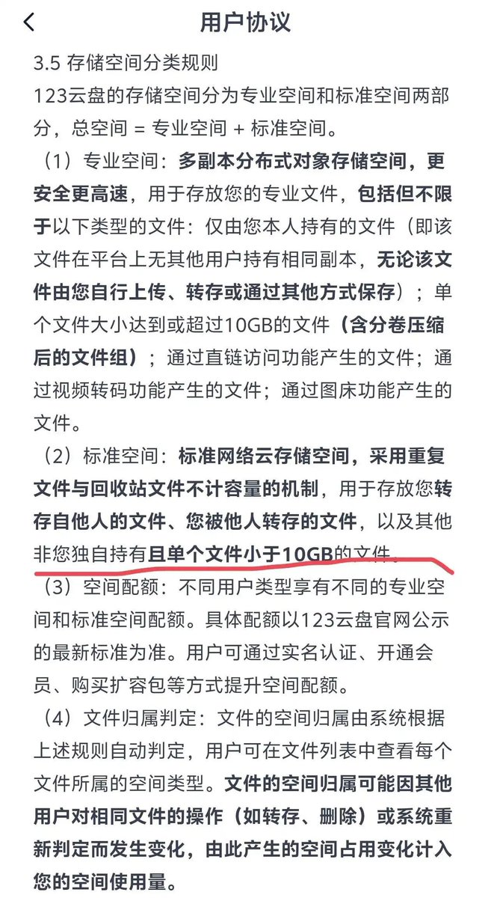
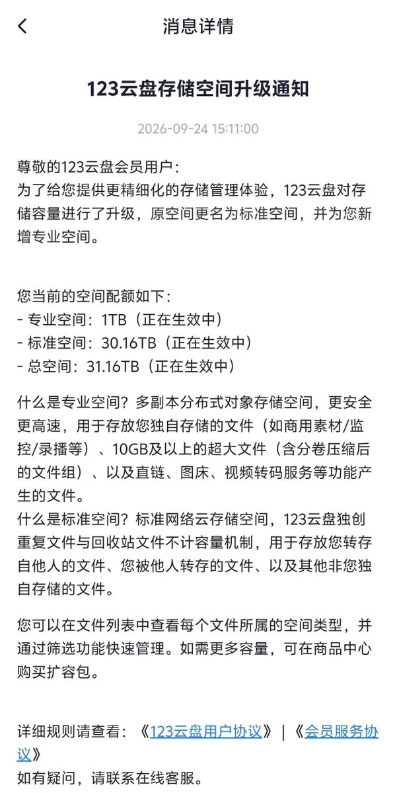

继115网盘暴雷后，123云盘调整存储规则，自传空间仅剩1TB。不管用户此前购买了多少 TB 的云盘容量，如今真正能够用于自己上传文件、手机照片备份和文件夹自动备份的空间，都只有这1TB「专业空间」
原有的大容量空间则主要只能用于转存他人文件，相当于把“自己上传”和“转存”彻底拆成了两套容量。更离谱的是，转存他人或被他人转存的单个文件还要求小于 10 GB。对于动辄几十 GB 甚至上百 GB 的原盘 4K 视频来说，这一限制直接影响转存和分享
此前购买再多容量，如今自己能上传的仍只有1TB，换句话说123云盘都是活动卖完就砍权益的。之前网页下载限1G大小，月流量限10G，后面又强制登录。现在网页登录也没了，必须用客户端下载，那App从打开到下载文件要关6、7个广告，别人分享的文件转存到App，又弹一遍会员开通窗口
原有的大容量空间则主要只能用于转存他人文件，相当于把“自己上传”和“转存”彻底拆成了两套容量。更离谱的是，转存他人或被他人转存的单个文件还要求小于 10 GB。对于动辄几十 GB 甚至上百 GB 的原盘 4K 视频来说，这一限制直接影响转存和分享
此前购买再多容量，如今自己能上传的仍只有1TB，换句话说123云盘都是活动卖完就砍权益的。之前网页下载限1G大小，月流量限10G，后面又强制登录。现在网页登录也没了，必须用客户端下载，那App从打开到下载文件要关6、7个广告，别人分享的文件转存到App，又弹一遍会员开通窗口

